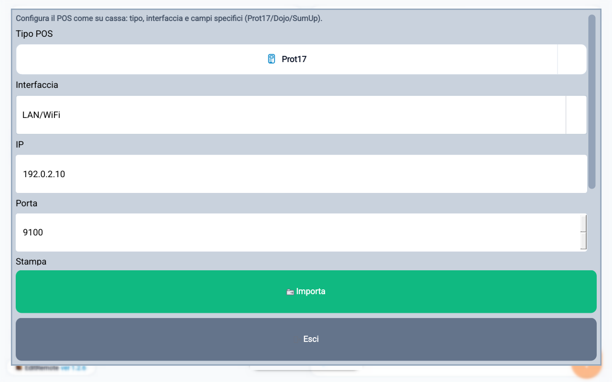
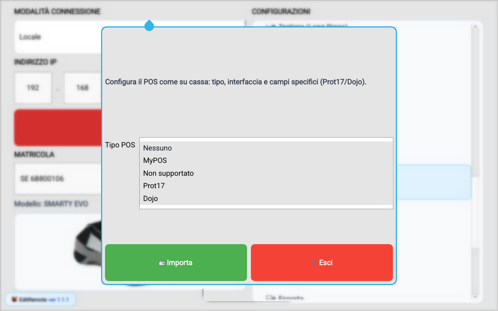
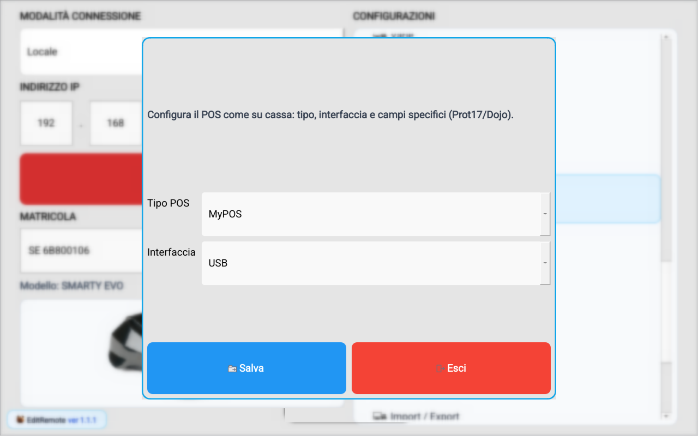
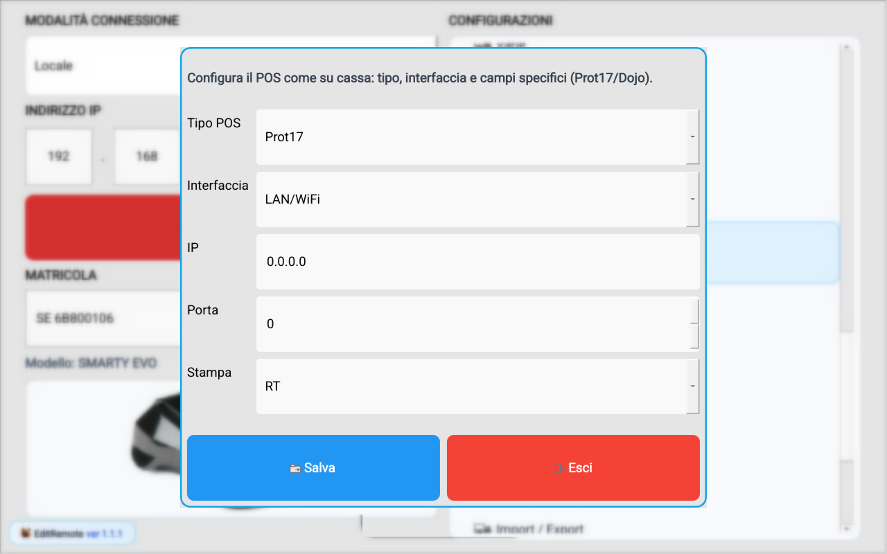
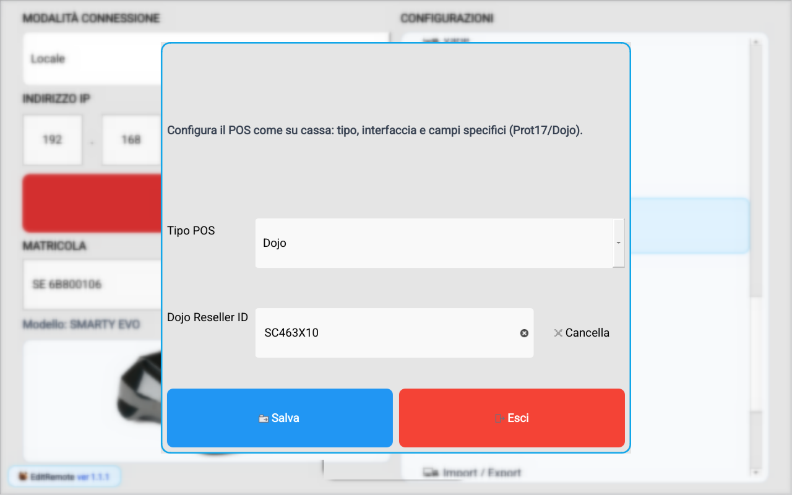
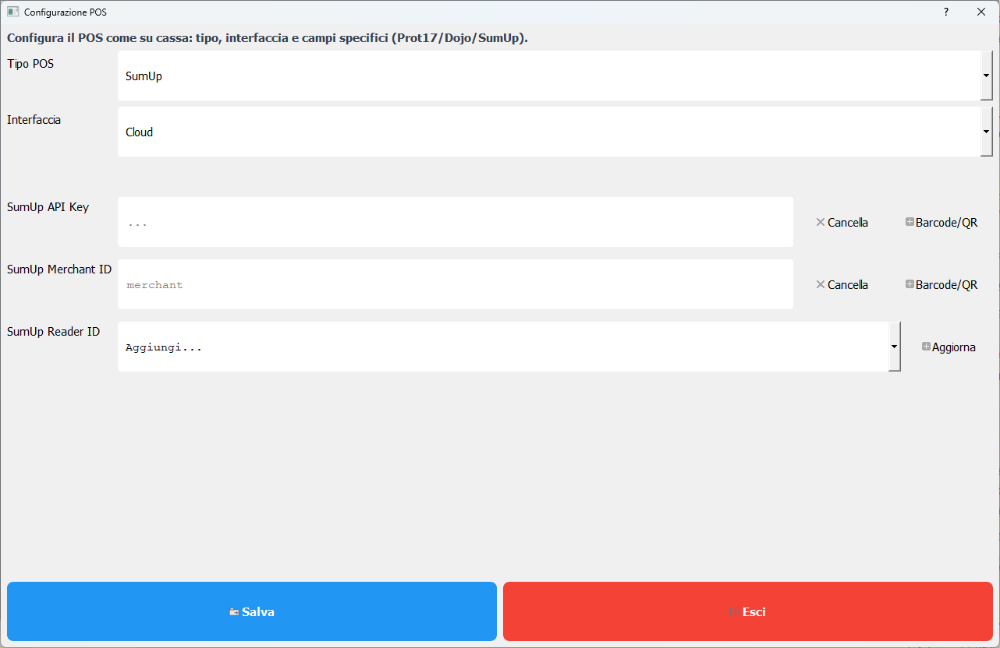
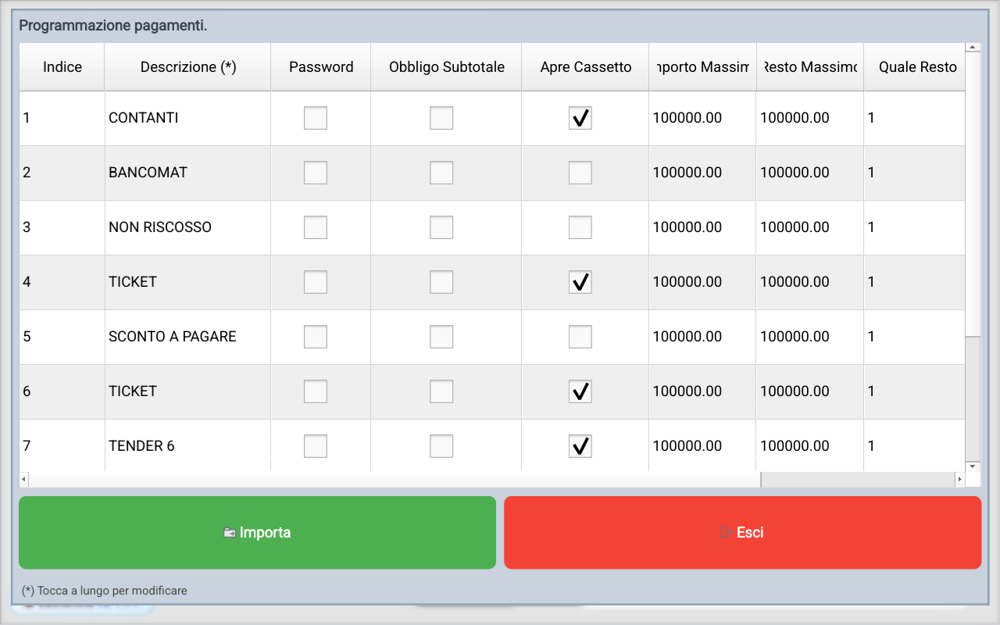

Config POS
Guida operativa
Questa schermata corrisponde alla funzione 834 MENU della cassa.
- Apri Config POS dalla lista Configurazioni.
- Premi Import per leggere i dati attuali dalla cassa.
- Seleziona il tipo POS corretto.
- Compila solo i campi richiesti per quel tipo di POS e di collegamento.
- Premi Salva, poi verifica con un pagamento di prova che tutto funzioni.
Tipi POS disponibili

- NESSUNO: POS non collegato.
- NON SUPP.: POS non supportato; i pagamenti vengono gestiti senza collegamento al POS.
- MYPOS: terminale myPOS.
- PROT.17: collegamento con protocollo 17 (di solito terminali Ingenico Desk/3200).
- DOJO: terminale Dojo.
- SUMUP: terminale SumUp (servono API Key, Merchant ID e Reader ID; vedi la sezione SumUp in fondo alla pagina).
Interfacce e parametri da inserire
- TIPO CONN. (tipo di collegamento): USB, LAN/WiFi, SERIALE (MYPOS solo USB).
- INDIRIZZO IP (l'indirizzo che identifica il POS sulla rete del locale): va compilato solo se il collegamento è LAN/WiFi.
- PORTA TCP (il canale di comunicazione tra cassa e POS sulla rete): va compilata solo se il collegamento è LAN/WiFi.
- STAMPA: disponibile solo con POS tipo PROT.17. Valori: RT (la cassa), POS o POS+RT.
Cosa impostare per tipo POS
- MYPOS: imposta TIPO POS = MYPOS e collegamento USB. In Config POS non servono indirizzo IP né porta.
- PROT.17 / Ingenico: imposta TIPO POS = PROT.17, poi scegli il collegamento (USB, LAN/WiFi o SERIALE). Se scegli LAN/WiFi inserisci INDIRIZZO IP e PORTA TCP. Imposta anche STAMPA.
- DOJO: imposta TIPO POS = DOJO e completa la procedura guidata del terminale Dojo.
- NON SUPP.: da usare solo se il POS non è collegato alla cassa; la cassa non esegue i pagamenti collegati al POS.
Dettaglio campi PROT.17 (Ingenico)
- TIPO POS: seleziona PROT.17 per collegare un POS Ingenico (protocollo 17).
- TIPO CONN.: scegli tra USB, LAN/WiFi o SERIALE, in base a come il terminale è collegato alla cassa.
- INDIRIZZO IP: è l'indirizzo che identifica il POS sulla rete locale (il numero che il POS ha sulla rete del locale). Va compilato solo se TIPO CONN. è LAN/WiFi.
- PORTA TCP: è il canale di comunicazione su cui il POS riceve i comandi dalla cassa. Deve essere uguale a quello impostato sul terminale.
- STAMPA: decide dove stampare la ricevuta del POS: RT (la cassa), POS o POS+RT.
In pratica: se il POS Ingenico è collegato in rete, i campi da controllare sono INDIRIZZO IP e PORTA TCP. Se è collegato con USB o seriale, indirizzo IP e porta non vengono usati e il controllo principale riguarda il campo STAMPA.
Dettaglio configurazione DOJO
Quando selezioni TIPO POS = DOJO, la configurazione si fa dentro EditRemote, come per SumUp:
- DOJO API KEY: compilabile a mano oppure con il pulsante Barcode/QR.
- DOJO RESELLER ID: compilabile a mano oppure con il pulsante Barcode/QR.
- DOJO TERMINAL ID: scegli il terminale dalla lista del servizio online premendo Aggiorna (oppure la lista si aggiorna da sola quando API Key e Reseller ID sono validi).
La ricerca dei terminali Dojo è fatta da EditRemote. Poi la configurazione POS viene salvata in cassa con i valori scelti nell'app. Per Dojo non servono indirizzo IP né porta nella schermata Config POS.
Nota: la procedura da tastiera della cassa resta disponibile, ma con EditRemote la scelta del terminale si fa nell'app.
Collegamenti con la programmazione pagamenti
Dopo la configurazione POS, nel menu Pagamenti della cassa attiva l'opzione ABILITA POS per i metodi elettronici che devono usare il terminale.
Note sui singoli terminali POS
- myPOS K300: all'avvio scegli il collegamento e il profilo Cash Register per usarlo con la cassa.
- Ingenico Desk/3200: sul terminale controlla il protocollo 17, il tipo di linea, la porta di rete e i messaggi di stato che il terminale mostra.
- Dojo: con EditRemote la ricerca dei terminali e la scelta del Terminal ID si fanno nell'app. In cassa vengono programmati i campi D1 (API Key), D2 (Reseller ID) e D3 (Terminal ID).
- SumUp: servono API Key, Merchant ID e Reader ID. Usa il pulsante Aggiorna per elencare i lettori disponibili.
- Messaggi di errore frequenti durante l'uso: POS TIMEOUT (il POS non ha risposto in tempo), POS TX ERROR, OP. POS FALLITA, POS NO CARD, POS DISCONNESSO. Se compaiono e non sai come risolverli, contatta il tecnico.
Schermate di esempio
Schermata Config POS

Schermata Config POS - MyPOS

Schermata Config POS - PROT.17

Schermata Config POS - Dojo

Schermata Config POS - SumUp

Schermata Pagamenti

Controlli finali consigliati
- Conferma su cassa dei valori programmati e del tipo POS selezionato.
- Fai un pagamento di prova per verificare che cassa e POS comunichino correttamente.
- Dopo la modifica, fai una copia di sicurezza con Export.
- Se una voce non è disponibile, controlla il modello della cassa e la sua versione.
Configurazione SumUp
Collega EditRemote alla cassa, apri Config POS e seleziona SumUp nel campo Tipo POS. Se lavori da remoto, attendi che EditRemote legga la configurazione attuale; per avviare il collegamento vedi la guida al collegamento remoto. Se lavori in locale, premi Importa per leggere i dati attuali.
Quando selezioni TIPO POS = SUMUP, devi compilare:
- API KEY (obbligatoria)
- MERCHANT ID (obbligatorio)
- READER ID (scegli dalla lista dei lettori disponibili)
Con SumUp non devi impostare INDIRIZZO IP né PORTA TCP del POS. Il lettore deve essere acceso e collegato a internet.
1. Inserisci API Key e Merchant ID
- Inserisci la SumUp API Key del tuo account e il SumUp Merchant ID dell'esercente. La API Key è la chiave che autorizza le richieste; il Merchant ID identifica l'esercente. Non confonderli con il codice di collegamento remoto della cassa.
- Puoi digitare i dati oppure usare Barcode/QR. Viene riconosciuto un QR che contiene solo la API Key, con prefisso sup_sk_, e un QR con la dicitura sumup_api_key=....
- Nello scanner inquadra il QR e controlla il valore letto. Se l'immagine è ruotata usa Ruota o Specchio; premi Invia per riportare il dato nel campo. Cancella svuota il campo.
2. Seleziona un lettore già associato
- Dopo aver compilato API Key e Merchant ID, premi Aggiorna accanto al campo SumUp Reader ID per recuperare i lettori associati all'esercente.
- Apri l'elenco e scegli il Reader ID del terminale da collegare alla cassa. Per un lettore già presente non serve un nuovo pairing code.
- Premi Salva e attendi l'esito della programmazione.
3. Aggiungi un nuovo terminale
- Prepara il terminale SumUp per l'associazione e leggi il pairing code mostrato dal terminale.
- Nell'elenco SumUp Reader ID seleziona Aggiungi....
- Alla richiesta Nome lettore inserisci un nome riconoscibile, ad esempio “Negozio”, e conferma.
- Alla richiesta Pairing code (il codice che il terminale mostra per farsi riconoscere) inserisci il codice del terminale e conferma. In questo campo non inserire la API Key, il Merchant ID o altri codici della cassa.
- Attendi la risposta di SumUp. Se l'associazione riesce, il nuovo Reader ID viene aggiunto e selezionato e il programma salva la configurazione POS. Attendi anche la conferma della cassa; se l'invio non riesce, ripeti il salvataggio senza creare di nuovo il lettore.
L'aggiunta funziona anche in modalità remota: EditRemote collega il lettore a SumUp e poi invia il Reader ID alla cassa. In locale l'associazione passa dalla cassa. Se API Key, Merchant ID o pairing code non sono validi, oppure manca la connessione, compare un errore: controlla i dati prima di riprovare.
4. Abilita il pagamento e verifica
Dopo il salvataggio attiva ABILITA POS nei pagamenti elettronici che devono usare il terminale, poi verifica il funzionamento con un pagamento di prova. Inserire le credenziali non attiva da sola tutti i metodi di pagamento.